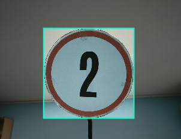

Görüntü İşleme Projesi


Açıklama
Bu proje kapsamında, dijital kameralar aracılığıyla elde edilen görüntülerdeki sayı etiketlerini tespit edip analiz eden bir sistem geliştirilmektedir. Python programlama dili ve Roboflow platformu kullanılarak, görüntü işleme teknikleri ve nesne algılama modelleri üzerine odaklanılmıştır.
Sayıların tespiti ve konumlandırılması sonrasında sistem, gerçek zamanlı olarak bu veriler üzerinden karar alma süreçlerini gerçekleştirebilmektedir. Proje, akıllı sistemler ve otomasyon uygulamaları için temel oluşturabilecek nitelikte tasarlanmıştır.
Özellikler
- Gerçek zamanlı görüntü işleme ve analiz
- Kamera verilerinden sayı etiketlerinin otomatik algılanması
- YOLOv8 tabanlı nesne tespiti
- Roboflow ile veri seti oluşturma ve model eğitimi
- Gelişmiş görüntü ön işleme teknikleri
- Dinamik ve kolay entegre edilebilir sistem mimarisi